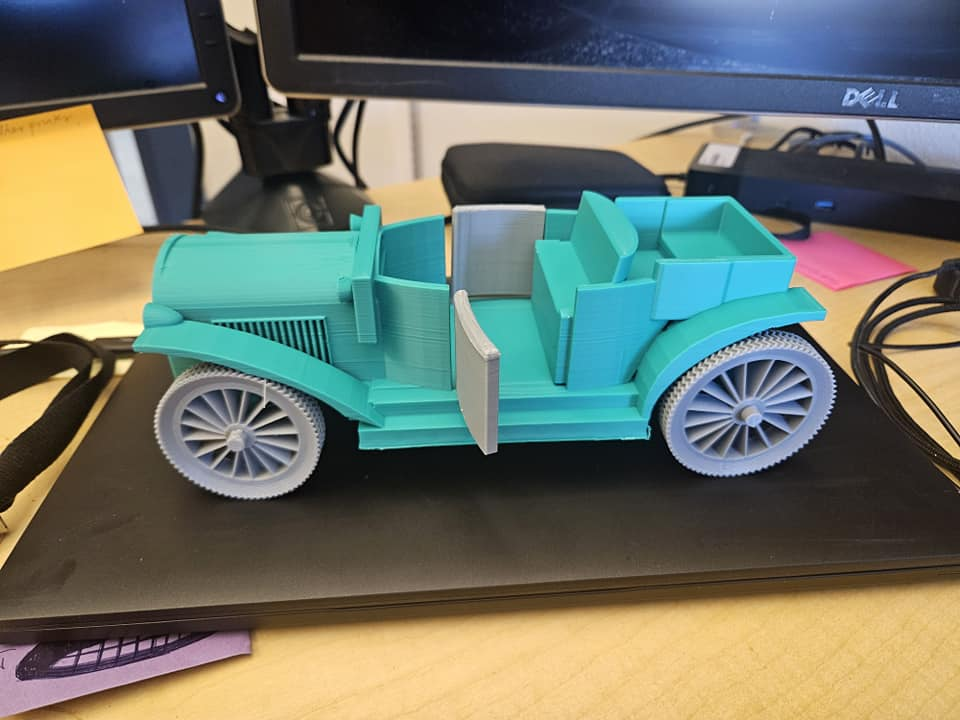

1925 Model T Roadster
The Ford Model T Roadster, introduced in the early 20th century, is a symbol of America's industrial revolution and the democratization of mobility. Launched in 1908 by the Ford Motor Company under the leadership of Henry Ford, the Model T was the first car to be mass-produced using assembly line techniques. This innovation dramatically lowered production costs, making automobiles affordable to the average American worker. The Roadster variant, with its open-top, sporty profile, and two-passenger layout, became a favorite among young drivers and those who sought both utility and style. With its sturdy design and ease of maintenance, the Model T revolutionized personal transportation and became an icon of freedom and progress.
By the 1920s, the Model T had transformed American society—boosting infrastructure development, expanding the reach of commerce, and enabling a new kind of social mobility. Over 15 million units were sold before production ended in 1927, solidifying its legacy as the car that "put America on wheels." The Roadster, in particular, symbolized a rugged independence and was popular among farmers, veterans, and first-time car buyers. Its presence in "The American Dream" 3D printing series pays tribute not only to the vehicle's historic impact but also to the people who lived, worked, and served during the dawn of modern American motoring.

1928 Model T Executive
The 1928 Ford Model T Executive represents the evolution of America’s most iconic automobile—refined for comfort, status, and practicality. While the original Model T was built for the everyman, the Executive variant introduced subtle upgrades in style and interior appointments, catering to professionals and business owners who sought distinction without abandoning Ford's hallmark durability. With a more enclosed body style, improved seating, and options for custom fittings, the Executive model delivered utility with a sense of prestige.
By the late 1920s, the Model T had become more than just a car—it was a cultural cornerstone. The Executive trim embodied this legacy, offering mobility to a growing class of American entrepreneurs and civic leaders. Its popularity among small-town bankers, postmasters, and local officials symbolized progress and aspiration in the wake of industrial growth. The inclusion of the 1928 Executive in "The American Dream" 3D printing series honors those who steered their communities forward with vision, grit, and the wheels to match.